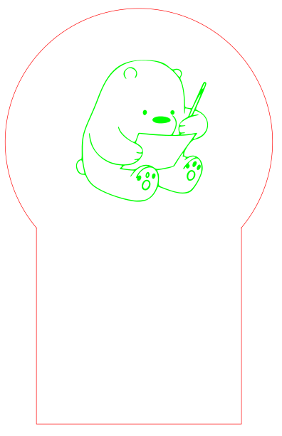

2D & 3D DESIGNED PARTS
I sketched and planned for a rough idea of my project. I came out with the dimensions and size of my model considering the components that I want to include which are the touchsensor, neopixel and I2C LCD. I designed the 3D model using the Fusion 360 software. With the knowledge and experiences I have from the music box assignment. I drew each faces of the model with the precise dimensions and extruded each faces into a new body. Then, I downloaded the sketch in DXF File Format.
I used the software, Inkscape to edit my files. I opened the downloaded DXF Files from Fusion 360. The drawings are now in 2D and I edited my 2D design that I want to engrave on the acrylic piece. I edited the 2D drawings in Vector and Raster Image Form. As shown in the image below, the red strokes are the Vectors which are used to cut the wood and arcylic pieces while the green strokes are the rasters which are used to be engraved.
Laser Cut Parts
Based on the Vector and Raster images that I have edited, I am ready to laser cut the wood and arcylic pieces. The video below shows the laser cutting process of my project.
After the laser cut, I assembled all the wood pieces together to form my model design. I checked for the fittinga especially for the wood piece that has to place the 12C screen and touch sensor.
3D Printed Parts
For the 3D components in my projects, I have designed a component that is specially made to hold the touch sensor to make it more accessible. As the jumper cable connected to the touch sensor causes it to be bulky. I designed a 3D model that provides a neater appearance for the cables connecting to the touch sensor pins.

Embedded Microntroller
Input and Output Devices
Input Device
The input device that I used is touch sensor. The touch sensor in my project is used to control the display neopixel lights and the I2C LCD. The touch sensor functions to change the display light colours and the wordings shown on the I2C LCD with a touch on the sensor. To make the input device work on my project, I started to program for the touch sensor to check and test for the the sensors. Once it is ready, compiling of codes will be done to make it function together with the output devices.

Output Devices
The main output devices used are the neopixel lights and the I2C LCD. I used a 7 pins neopixel lights, which functions to shine my engraved acrylic piece with different colours. I coded for different colours at different state depending on the receiver at the touch sensor.
As for the I2C LCD, it is used to display the colours displayed from the neopixel lights that I have coded in the program. Besides, I have also included in quotes that can remind users to stay positive as they are using the product.
Embedded Program
Before compiling the codes for both input and output devices, I tested all three component individually to test for the sensibility. Once the three components work, I work on the compilation of components. I included in the libraries needed for neopixel lights and 12C LCD. I declared the codes by defining them so that the program can understand the codes.
I group the displayed colours according to cases together with the displayed wordings on the 12C screens. To make the wordings be displayed in 2 rows, I coded for the y & x axis and edited according to the spacing to make it more presentable.The codes that I have coded are as shown below.